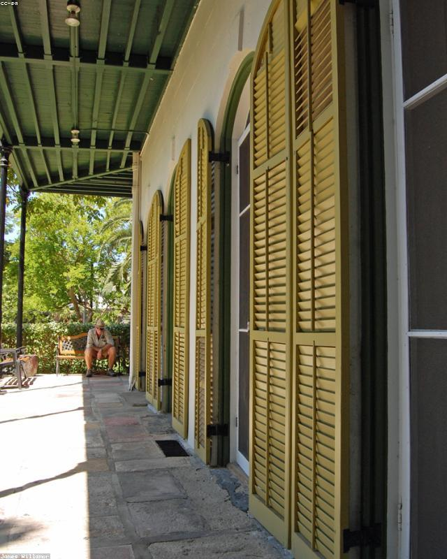

Welcoming our daughter
21 Mar 2026 · Kathmandu, Nepal
Private archive
0 kmNewbornBorn here
Good evening, Roshan
Photo · TimelineYour life journey
a lifetime of moments
Visited place

Welcoming our daughter
21 Mar 2026 · Kathmandu, Nepal
Your archive
Kathmandu trek
1 / 6
09 Jun
2026
Morning hike
Kathmandu, Nepal
Caught a beautiful sunrise on the trail today. 🌄
Explore your journey beyond the map.
Delete memory
This removes the memory from your timeline. You can undo this action for a short time.
The details you entered will be lost. Stay here to keep working on this memory.
Step 1 of 4 · Select media
Drag the pin (or tap the map) to set exactly where this happened.
The roots of your Circle of Life — the generations whose story came before yours.
Ancestry is a dedicated space in Systemboom.
SYSTEMBOOM · Memory of Life
—